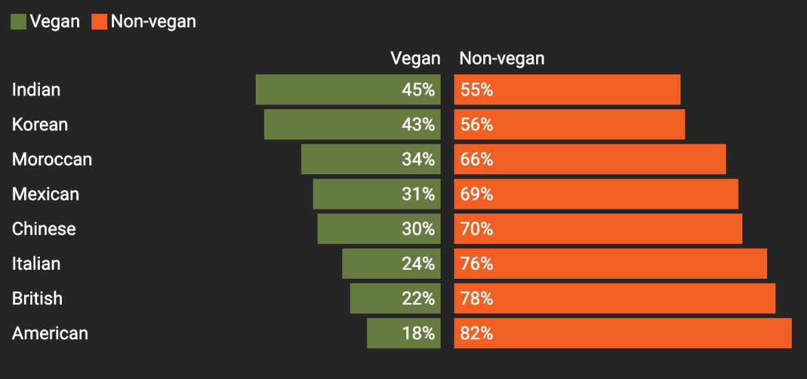
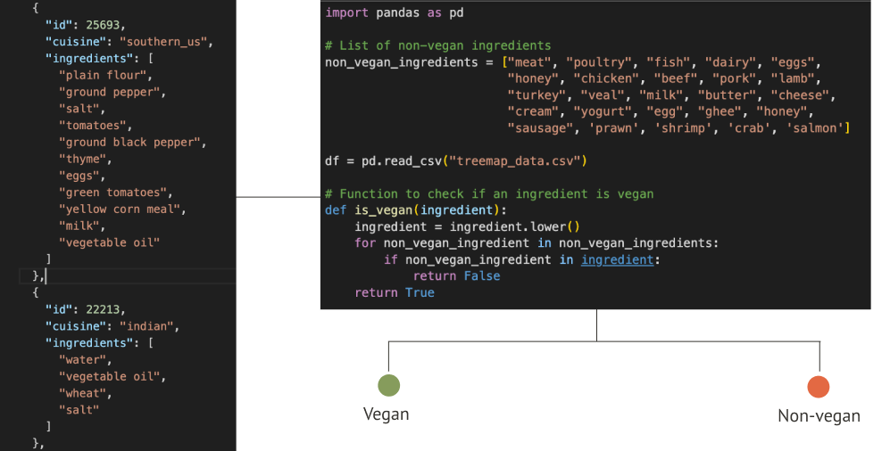

As dietary preferences evolve and awareness of plant-based lifestyles expands, understanding the availability of vegan options within global cuisines becomes increasingly important. Exploring the culinary landscape across various regions, reveals the spectrum of vegan and non-vegan recipes that define each cuisine. Through this visualization, let's see how cuisines around the world fare when it comes to plant-based options.
Vegan and Non-Vegan recipes across different cuisines
Exploring Cuisine and Ingredient Patterns
Cuisines like Indian and Mexican and Moroccan cuisine, and certain variations of Asian cuisines boast a high percentage of naturally vegan dishes due to their reliance on spices, sauces, legumes, vegetables, and grains as staples.
Conversely, northern European and American cuisines are characterized by the abundant use of hearty animal-based ingredients such as butter, milk, and eggs.
Herbs & Spices
Vegetables & Fruits
Oils & Fats
Dairy & Eggs
Grains & Legumes
Sauces & Condiments
Other
Environmental Impact: Comparing Ingredients
Many are turning to veganism, driven by a growing awareness of climate change and the impact of animal agriculture. Comparing the environmental impact of the most used vegan and non-vegan ingredients highlights the contrast. Non vegan ingredients like Beef, bacon and cheese have the highest environmental impact.
With a growing number of consumers seeking plant-based options, the question arises: how adaptable are these cuisines? This inquiry is particularly fascinating when considering India. The deep-rooted tradition of vegetarianism, coupled with the abundance of naturally vegan ingredients and dishes, positions India as a potential springboard for exploring a more plant-based future.
Let's explore 100 popular Indian recipes to see how many are vegan and how easily others can be adapted.
Vegan-Friendly Recipes Breakdown
Vegan Alternatives to Meat, Dairy, and Egg Products
As we saw, Indian cuisine has a high share of naturally vegan ingredients and recipes. However, if we were to include commercial vegan substitutes like plant based meat and vegan butter, a lot of non vegetarian dishes could also become vegan. This radial chart explores some popular substitutes for the most common non vegan ingredients.
So can India be a successful Blueprint for a Vegan World?
India's unique culinary heritage positions it as a global leader in showcasing the deliciousness and environmental benefits of plant-based cuisine. By embracing these naturally vegan dishes and readily available substitutes, India can become a model for reducing greenhouse gas emissions and paving the way for a more sustainable future for our planet.

About the Data
1. Global Cuisine Dataset: The dataset, featured in a Kaggle playground competition titled "What's Cooking?", includes a training set (train.json) and a test set (test.json). The training set contains recipe IDs, types of cuisine, and lists of ingredients, while the test set includes recipe IDs and lists of ingredients.
2. Indian Cuisine Dataset: The data sources for this dataset include Wikipedia, Hebbar's Kitchen, and Archana's Kitchen. The dataset includes columns for the name of the dish, ingredients, type of diet (vegetarian or non-vegetarian), course (e.g., starter, main course, dessert), state of origin, and region.
Data Analysis
To test the hypothesis that Indian cuisine can serve as a blueprint for global veganism, the dataset of over 40,000 recipes was explored, and a sample of at least 800 recipes for several popular cuisines was taken. This sampling approach ensured that each cuisine was well represented while managing computational resources effectively.
Next, each recipe was classified as either vegan or non-vegan by identifying and filtering out non-vegan ingredients such as milk, meat, and butter.

The Road Forward: A Sustainable and Ethical Food System While challenges exist, the potential for a vegan blueprint in India is undeniable. By promoting innovation in plant-based alternatives, fostering consumer education, and addressing the unique role of dairy, India can carve its own path in the global vegan landscape. Success will depend on creating a future where vegan options are not just replacements, but rather stand-alone culinary creations that are delicious, affordable, and culturally relevant. This, in turn, can contribute to a more sustainable and ethical food system, not just in India, but globally.
Further Research: This research lays the groundwork for a more comprehensive exploration of a vegan blueprint in India. Future studies could delve deeper into consumer attitudes towards veganism, the economic feasibility of plant-based alternatives, and the role of social marketing in promoting vegan options within the Indian context. Additionally, exploring the potential of indigenous and underutilized plant-based ingredients can further strengthen the foundation for a future-oriented vegan food culture in India.